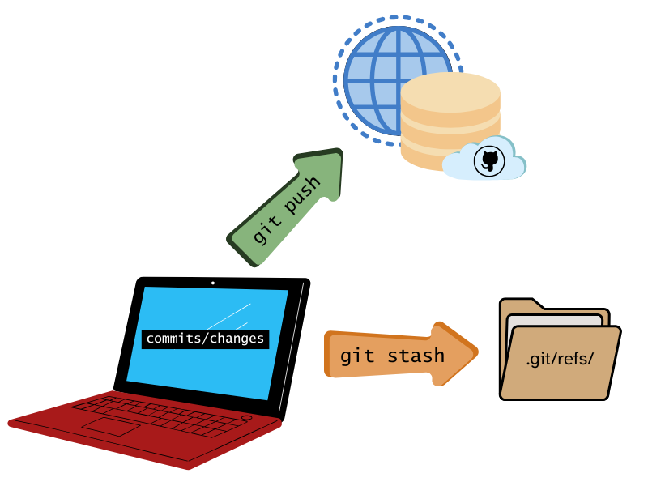
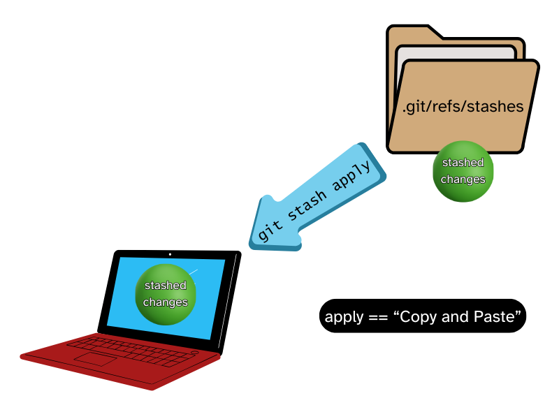
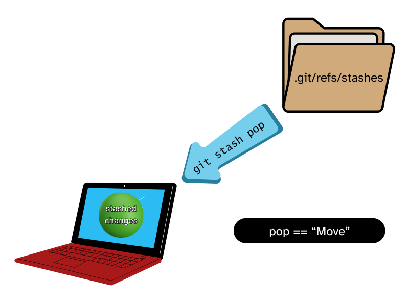

![]()
git stashCommand |
Description | Type this into the Git Terminal | So you can… |
|---|---|---|---|
push |
Saves your local changes to a stash and rolls your working tree back to HEAD |
git stash push |
Return your files to what they looked like at your last saved commit before you started making changes, while saving your changes into a stash |
list |
Lists all the stash entries that you have for your current project/repo | git stash list |
See all of the stashes you have for your repository |
show |
Show the changes in the stash as a diff between the stash and the most recent commit back when the stash was made | git stash show |
See a quick summary in the terminal about what you’ve changed in that stash from the last commit |
pop |
Remove a stash from the stash list and bring it’s changes back into your local directory | git stash pop |
Integrate your stash changes back into your current files, while removing the stash from the stash list because you don’t need it there anymore |
apply |
Bring changes from a stash back into your local directory while keeping the stash in the stash list | git stash apply |
Integrate your stash changes back into your current files, while keeping the stash in the stash list because you’re not ready to get rid of it |
branch |
Creates and checks out a new branch starting from the commit at which the stash was originally created while applying the changes of the stash and dropping the stash from the stash list | git stash branch <new_branch_name> |
Start working on your changes again in a version of the repository that has been rolled back to the last commit at the time the stash was made |
clear |
Removes all stashes from the stash list | git stash clear |
Purge your repository of all stashes because you’re confident you don’t need them anymore |
drop |
Removes one stash from the stash list | git stash drop |
Remove one of your repository’s stashes because you’re confident you don’t need it anymore |
In this post:
What is a Git Stash?
A git stash is exactly what it sounds like. It’s a command in Git that allows you to save (stash away) any changes that are uncomitted in your current directory. Stashes are unique and centralized to each repository. In comparison, git push is used to get staged changes that are committed onto the remote repository.

git push moves staged changes to your remote. git stash can move any changes to the local refs folder
Why Would I Want to Use git stash?
Git stashes can help you maintain a clean git/working environment. You would usually want to use git stashes when you need to cleanse your current directory of whatever unstaged changes you have. One of the most common use cases for git stash is when you have changes that you don’t want to commit to your current branch but need to switch to another branch. As stated in my talk, Please Let Me Merge Before I Start Crying, I believe that emergencies aren’t a thing. Still, sometimes, a situation can arise when you have to stop to pivot and work on something else within the same repository.
You might also want to use git stash if you’ve started working on a branch but realized you never pulled down updates from the remote repository. Instead of committing your work in progress, you can keep your commit history clean (which is important!) by stashing your current changes, and then bringing the changes in to resolve any potential conflicts.
How Can I Use git stash?
Stashing with A Terminal
If you’re an R user like myself, you may favor using the RStudio IDE (Integrated Development Environment). While great for many things, it unfortunately does not have a built-in graphical user interface (GUI) for git stashes at the time of writing this. This means there are no accessible buttons to click to create a git stash like you would for creating a commit, pushing and pulling to repositories, or other standard git functions. If you use RStudio, the most accessible way to create and use git stashes within the IDE is to use the embedded terminal:
If you’re not using Rstudio, you can use any terminal/Command Line Interface (CLI) you’d like. This could be Powershell on Windows operating systems, Terminal on Macs, or even Bash on Linux systems. The potential benefit of using a terminal is increased functionality with the possibility of a steeper learning curve or decreased accessibility due to the difficulty of learning to script in CLIs for most users.
Stashing with Third-party GUI Clients
If you don’t feel like being bothered with terminals or just want to use a pretty GUI for your Git operations, you can always use third-party programs like GitHub Desktop, SourceTree, or GitKraken. These GUI clients absolutely take some of the pain out of doing the most common git procedures, stashes included.
Different IDEs like Positron and VS Code can also be considered third-party GUI clients that allow you to use git stashes with git-flavored extensions from the OpenVSX Marketplace (for Positron) and the VS Code Marketplace (for VS Code).
Because third-party GUI clients can vary widely in their user interfaces and functionality, this post will only go over how to create and work with stashes via the Git terminal. Even if you are using a GUI, reading about the commands a git stash can take and what each of them do can help give a better understanding of stashes and what specific actions you’ll need for your work. If you’re not using the terminal, it’s always a good idea to explore what functionalty your GUI client has as it can vary. For most users, the functionality a GUI client can provide is usually efficient for most use cases. However, if you start running into any friction while using a GUI client, it may be time to consider using a terminal if you haven’t already.
A Rundown of git stash Commands
If you use the Git terminal to do your stash work, you can find the most essential commands you’ll need to know in the table below. If you’re choosing to use a GUI, you won’t have to type the inputs into a terminal, but rather, the application you’re using will be interacting with Git on your behalf to perform some of these commands for you:
Stashes in the Wild
So it’s one thing to list off the commands and tell you to go “figure it out” because there isn’t “much” to git stashes, but I feel like it would be more helpful to see some examples of using stashes in the wild. Let’s look at some scenarios in which you could use these commands.
Making a Stash
Scenario: You jumped into working on a branch that hasn’t been updated from the remote in a month and of course, you forgot to pull before touching anything. You want to make a stash to keep your current work safe so you can pull the updates in and deal with any conflicts later. You save the stash with a message to give a description of the work you’re saving.
git stash -m "premature analysis changes before pull"Popping the Last Stash Saved
Scenario: So it turns out you won’t have any conflicts from that last scenario, so you simply want to throw your changes from that last stash back into your environment.
git stash popListing Stashes
Scenario: After doing more work, you realize that you’re missing some code you absolutely did write at some point… but can’t find anywhere. You suspect it’s in a different stash but don’t know which one. So you want to see all your available stashes for this project.
git stash listShowing a Stash
Scenario: You think you’ve found the right stash. The one at index 2, but you’re not entirely sure. You want to see a quick summary to see what changes are on this particular stash.
git stash show 2
Important
Sometimes, when you start using some commands like git stash show or git log the terminal may expect you to input something and won’t allow you input anything else. If this happens, you simply need to “escape” to revert the terminal back to it’s original state. You can do so by inputting the letter q.
Popping a Specific Stash
Scenario: You are sure the stash at index 2 is the correct choice, and you know that whatever work you do today will be good enough to commit to the branch, so you want to pop off that stash to continue your work while removing it from your stash list.
git stash pop 2Branching a Stash
Scenario: You’re starting to realize that the scope of your work has crept away a bit. It now makes sense to have a dedicated branch that’s separate from the current one to continue this work. You want to name the branch “misc-fixes.”
First, make the stash…
git stash -m "misc fixes port"… then make the branch.
git stash branch misc-fixesApplying a Stash
Scenario: You’re starting your work on the new “misc-fixes” branch and have made solid progress before taking a break from it. When you finally pick it up again, you realize that an ambitious function you wrote may need a tweak, but you’re unsure where or how to implement it. You apply the stash (instead of popping it) so you can freely experiment without losing the integrity of your code. If you mess up, your original code will be in the stash list.
git stash applyPushing a Stash
Scenario: You’ve switched to a different project someone else was working on because they asked you to help with a data-wrangling problem. Sadly, your brain is fried, and you’re just making it worse. Instead of committing wrong/incomplete code, you decide to push ALL of your changes (even untracked ones) to a stash so you can remove your embarrassment from the branch as if nothing ever happened.
git stash push -uDropping a Stash
Scenario: You don’t know what you were thinking, bothering to push those changes to a stash. Your code is broken and makes no sense. It’s not even relevant. You want to put the stash out of its misery and ban it to the shadow realm.
git stash drop
Warning
NOTE: You better be sure you want to do this. Git does not ask you if you’re sure… There are ways to recover stashes you’ve accidentally dropped, but if you’re a git newbie, it’s not pretty, and it’s out of the scope of this blog post.
Clearing a Stash
Scenario: You’ve persevered. Whatever seemingly impossible problem you worked on is now complete and rolled into your main branch. All of the stashes on your project are no longer needed. You want to drop ALL of your stashes in one cathartic input.
git stash clear
Warning
NOTE: You better be sure you want to do this. Git does not ask you if you’re sure… There are ways to recover stashes you’ve accidentally cleared, but if you’re a git newbie, it’s not pretty, and it’s out of the scope of this blog post.
Some Additional Things You May Want to Know
git stash apply -vs- git stash pop
If you’re just starting to explore git stashes, it may be confusing to know when to apply or pop a stash. Just remember that both of these commands will bring your stashed changes back into your working directory but will be handled differently in your git stash list:

git stash apply as “copying and pasting” your stashed changes into your directory. An intact copy stays in the stash list.

git stash pop as “moving” your stashed changes into your directory. The stash is removed from your stash list.
While git stash apply could be good for the cautious newbie who doesn’t want to get rid of something they may need, know that git stash pop or git stash drop is also important as you don’t want to bloat your git stash list with stale work. You should make it a habit to periodically check your stashes to make sure they’re still needed. In other words, don’t hoard your stashes!
Stashing Staged Changes
You may have so many changes in your environment at the moment but only want to save/stash a few of them. You can stage those changes and stash them. By default, git does not stash staged changes. You can use this to your advantage to quickly group changes together for a stash:
Either stage them via a GUI, or in the terminal with the -S option:
git add file-to-keep-1.R
git add file-to-keep-2.R
git stash -m "two important updates" -SPorting Stashed Changes to Another Branch
If, for any reason, you want to bring stashed changes into another branch that is already created, you can do so by switching to (checking out) the branch you want to bring the changes to and either pop or apply the changes to the branch.
If you’re using a GUI, switch to the desired branch. If using the terminal, check the branch out:
git checkout the-other-branchThen pop or apply the stash (In this case, the stash at index 3):
git stash pop 3Naming and Organization
The -m option lets you attach a message to a stash. This is a wonderful capability that can help you stay organized. Here’s just an example of some things you can insert into a stash message:
- The date you’re creating the stash
- A brief description of the work
- Action items/project statuses
- Challenges/things or people you’re waiting on before work can continue
- What branch you need to move the changes to if applicable
Referencing Stashes
Whenever you use any stash command/option without referencing a specific stash, git will always choose the stash at index 0 in the stash list, which is whatever stash you saved last. The easiest way to reference your stashes is by index. You can easily see which stash is at which index with git stash list:
git stash listAlthough not as easy as just referencing the index, you can search for your git stashes via grep if you get in the habit of attaching messages to your stashes:
Let’s say you have a stash that you tagged as “IMPORTANT”. When using grep, it is case-sensitive. Meaning we’d input this:
git stash list | grep "IMPORTANT"To find the stash/index we’re looking for (Index 1 in this case):
Looking at the Stash Dates
Although it’s an option for the git log command, you can use --date to display the date and time the stashes in the stash list were created:
Use --date=local to see the full day and time the stashes were created.
git stash list --date=localUse --date=relative to see a relative time calculation like “35 minutes ago”. This could come in handy if you’ve made a lot of stashes without labeling them well, as you can gauge the time on the stash you’re looking for.
git stash list --date=relativeAbandoning Ship
Sometimes, popping or applying stashes into your environment may lead to some merge conflicts:
If this happens, don’t forget that the first rule of resolving conflicts is to NOT panic. If for some reason you can’t help but panic, you can always tell git “nevermind” so you can deal with it later with the following command:
git reset --mergePerfection Can Halt Progress
One last bit of advice I want you to take from this is to not let fear or perfection stop you from making meaningful contributions to your project. Remember that the utility of git stashes lies in its ability to help you maintain a clean git/project environment. Don’t fall victim to hoarding your work.

I am absolutely guilty of waiting to make commits/push work to remotes because it’s not perfect. Things don’t have to be perfect, especially for larger projects. The best approach to tackling large projects that will take a while to complete is designating project milestones/checkpoints. These can be agreed upon “stopping points” in which you will determine whether your work is “good enough for now” so it can be committed instead of stashed away.
Hopefully, I’ve given you enough information to start using some git stashes. If you’d like to read the official git stash documentation yourself, you can do so here. If you’d like more resources on git workflows in general, you can checkout the README for my 2024 Posit Conf talk “Please let me Merge Before I Start Crying,” which has plenty of supplemental links to explore.